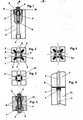
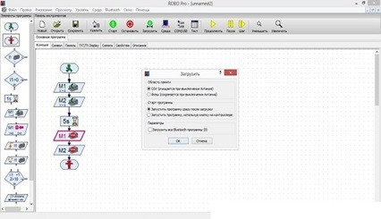

Обзор робототехнического конструктора Fischertechnik Robotics
Первый конструктор Fischertechnik Robotics с поставляемыми электронными датчиками был выпушен в 1983 г. компанией Fischertechnik, основанной в 1964 г. Артуром Фишером, как компания создающая пластмассовые конструкторы для детей.
Робототехнический конструктор Fischertechnik Robotics TXT Discovery set, для сборки автоматических систем был разработан в 2015 году. Особенность данного конструктора является уникальная, разработанная непосредственно производителем, система соединения деталей между собой.

Схема патента на изобретение блоков Fischertechnik Robotics.
Каждая отдельная деталь снабжается встроенным стальным стержнем, обеспечивающим прочность и жесткость собираемых конструкций. Кроме стандартных для данного конструктора деталей в новую модель были добавлены различные шестеренки, колеса и декоративные элементы. Управляющим элементом для Fischertechnik Robotics TXT Discovery set является программируемый контроллер ROBOTICS TXT.
ROBOTICS TXT работает под управлением ОС Linux и оснащен цветным сенсорным дисплеем размером 2,4 дюйма, с разрешением 320х240 пикселей. Для хранения программ в контроллере предусмотрена как внутренняя память, так и возможность установки карт MicroSD. Датчики и моторы подключаются при помощи двухжильных проводов с универсальными штекерами красного и зеленого цветов.
Набор имеет три датчика для подключения к блоку управления:
- фотодатчик, для управления освещением;
- датчик температуры;
- датчик касания.
Для осуществления движения в наборе Fischertechnik Robotics TXT Discovery set имеется 3 сервомотора.
Вместе с набором поставляется среда программирования ROBO Pro.

Интерфейс среды программирования ROBO Pro.
Разработка программ в этой среде ведется по общепринятым стандартам составления блок-схем, соответствующих ГОСТу 19.701-90. Это сделано для возможности начинать создавать программы для робототехнических устройств людям еще не знакомым с программированием и приучает сразу составлять грамотные блок-схемы.
В среде программирования ROBO Pro имеется встроенный режим симуляции, позволяющий наглядно отследить выполнение программы без их предварительной загрузки на программируемый контроллер. Для установки ROBO Pro на персональный компьютер или ноутбук требуется предустановленная ОС Windows 2000, Windows XP, Windows Vista, Windows 7, или Windows 8.
При отсутствие среды программирования программы для ROBOTICS TXT можно писать на языках программирования C, C++, C#, VB. Для загрузки программ используется контроллер USB или Bluetooth .
Преимуществами данного конструктора являются его удобная система крепления деталей и среда программирования, позволяющая сочетать как графическое программирование блоками, так и текстовое программирование, позволяющее обучающимся быстрее адаптироваться к более сложным робототехническим устройствам. Для более сложных моделей данный конструктор имеет поддержку языков программирования высокого уровня. Недостатками данного конструктора являются малая масштабируемость в плане создания собственных моделей и недостаточное количество датчиков, что сильно ограничивает обучающихся в развитие творческих способностей.
Для конструктора Fischertechnik Robotics TXT Discovery существует два разработанных учебно-методических комплекса.
1. Учебно-методический комплекс поставляемый с набором
2. Учебно-методическое пособие «Fischertechnik – основы образовательной робототехники».
Учебно-методический комплекс, поставляемый с набором включает в себя рабочую тетрадь, схемы сборки основных робототехнических моделей, и обучающую справку в среде ROBO Pro. Данный комплекс позволяет быстро начать собирать собственные робототехнические устройства по схемам, но его недостаточно что бы обучающийся смог понять не только практическую, но и теоретическую основу робототехники. Очень мало базовых примеров простых взаимодействий датчиков способствует более длительному переходу от стандартных моделей к собственным разработкам.
Учебно-методическое пособие «Fischertechnik – основы образовательной робототехники» под авторством В. Н. Халамова, Н. А. Сагритдиновой, разработанный всероссийским учебно-методическим центром образовательной робототехники содержит более углубленное изучение основных приемов робототехнических устройств. Данное пособие направлено на объяснение базового взаимодействий датчиков и моторов и переход на конкретные примеры, применяемые на соревнованиях. Недостатками данного комплекса являются небольшой объем изложения, составляющий всего 40 страниц, и малая база рассмотренных соревновательных роботов. Также отсутствует теоретическая составляющая общих принципов робототехники, что затрудняет переход на другие робототехнические устройства.